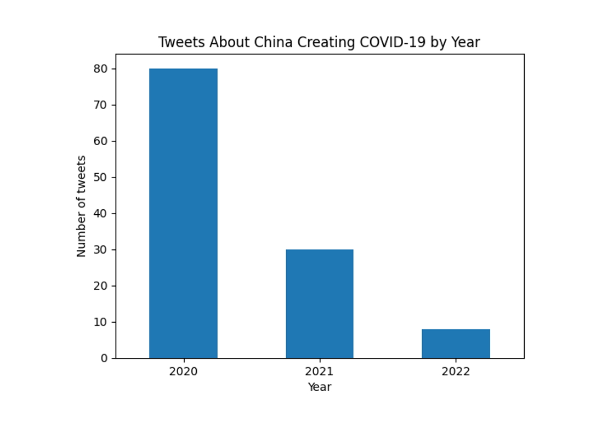

Data Preprocessing
DATA COLLECTION
- Statistics. A total of 118 tweets were collected from February 24, 2023.
- Method. The team relied on a modified version of a Python scraper using snscrape. The code we used was primarily based on an online source, which was enhanced by Victor Reyes, a fellow Data Science student, who made additional improvements to gather a wider range of data. The scraper code was finally updated by the team and tailored to meet the desired consistency and arrangement of data.
Furthermore, to ensure the uniqueness of our dataset, we conducted a manual yet meticulous comparison of all tweets with the help of the `Find` command to search for any duplicates. Any duplicates that we found were immediately removed from the dataset.Tweet Scraper
import snscrape.modules.twitter as sntwitter import pandas as pd import datetime # Creating list to append tweet data to tweets_list2 = [] search_term = "covid gumawa china" # sample search term years = [ "2020", "2021", "2022" ] months = [ "01", "02", "03", "04", "05", "06", "07", "08", "09", "10", "11", "12" ] end_of_month_days = [ "31", "28", "31", "30", "31", "30", "31", "31", "30", "31", "30", "31" ] # Using TwitterSearchScraper to scrape data and append tweets to list for year in years: for month in range(len(months)): print(f"Starting with {year}-{months[month]}-01") for i, tweet in enumerate( sntwitter.TwitterSearchScraper(f'{search_term} since:{year}-{months[month]}-01 until:{year}-{months[month]}-{end_of_month_days[month]}').get_items()): if i >= 300: break tweets_list2.append([ "@" + tweet.user.username, tweet.user.displayname, tweet.user.renderedDescription, " ", (tweet.user.created).strftime("%m/%Y"), tweet.user.friendsCount, tweet.user.followersCount, tweet.user.location, " ", tweet.rawContent, " ", " ", tweet.date.strftime('%m/%d/%Y %H:%M:%S'), tweet.url, " ", " ", tweet.likeCount, tweet.replyCount, tweet.retweetCount, tweet.quoteCount]) print(f"Done with {year}-{months[month]}-{end_of_month_days[month]}") # Creating a dataframe from the tweets list above tweets_df2 = pd.DataFrame(tweets_list2, columns=[ 'Handle', 'Username', 'Bio', 'Account type', 'Joined', 'Following', 'Followers', 'Location', "EMPTY DIVIDER", 'Tweet', 'Tweet Translated', 'Tweet Type', 'Datetime', 'URL', "Screenshot", "Content type", 'Likes', 'Replies', 'Retweets', 'Quote Retweets']) tweets_df2.to_csv(f'term_{search_term} date_{datetime.date.today()}.csv') print(tweets_df2['Tweet']) - Criteria. The dataset consists of tweets that were collected between 2020 and 2022, which primarily cover the topic of misinfo/disinfo regarding the origin of COVID-19 and the alleged role of China in its creation. The timeframe was chosen to cover the period since the outbreak of COVID-19 which intensified in early 2020. Keywords or phrases used were:
- "covid gawa ng china"
- "chinese gawa covid"
- "chinese ginawa covid"
- "virus gawa china"
- "covid gawa sa china"
- "coronavirus gawa china"
- "covid gumawa china"
- "covid ginawa china"
- "ncov gawa china"
- "covid pakana china"
- "covid made in china"
- "ncov ginawa china"
- "china created covid"
- "tsino gawa covid"
- "tsina ginawa covid"
- "china gumawa virus"
- Features. The dataset as it stands has features/columns specified in the table below.
Feature Name Description ID A unique identifier assigned to each tweet in the dataset Timestamp The date and time when the tweet was collected Tweet URL The web address of the tweet Group The group number assigned to the team Collector The username of the Twitter account that collected the tweet Category A broad category that the tweet pertains to such as Health or Gender. Topic A more specific topic of the group within the category Keywords Words or phrases that were used to search for or filter the tweet Account handle The Twitter username of the account that posted the tweet Account name The display name of the account that posted the tweet Account bio A brief description of the account and its purpose, as provided by the account owner Account type A label indicating the type or category of account, such as anonymous, identified, or media. Joined The date when the account was created Following The number of accounts the account is following Followers The number of accounts that are following the account Location The location associated with the account, as provided by the account owner Tweet The text of the tweet Tweet Translated The translated version of the tweet in the English language. Tweet Type A label indicating the type of tweet, such as text or reply. Date posted The date and time when the tweet was posted, as reported by Twitter Content type A label indicating the type of content that the tweet belongs to such as "Emotional" if the tweet contains subjective content. Likes The number of likes the tweet has received Replies The number of replies or comments the tweet has received Retweets The number of times the tweet has been retweeted Quote Tweets The number of times the tweet has been quoted or retweeted with a comment Reasoning An explanation justifying the misinformation/disinformation content of the tweet, may be a link Remarks Any additional comments or notes about the collected tweet
DATA PREPROCESSING
- Handling missing values. The team first examined the dataset to identify which columns contain null values. Columns such as Screenshot, Views, Rating, Reviewer and Review were dropped since they were considered insignificant data for analysis. Missing values for the columns Account Bio, Tweet Translated, Location, and Remarks were imputed with ‘No bio’, ‘No translation’, ‘No location’, and ‘No remarks’ respectively. All of these were accomplished using Pandas package methods isna, drop, and fillna.
- Handling outliers. Outliers in the dataset could be tweets posted without correspondence to the Wuhan lab leak rumors timeframe or unrelated to the topic of Covid-19 origin. The latter was handled through keyword matching and content analysis. However, tweets from 2021 and 2022 cannot be immediately considered outliers as the correlation is yet to be established. Upon checking the graph of frequency of tweets by year, we see that the year 2022 gets relatively uneven, less than 10 tweets, which can be consider as outliers at this point. Hence, tweets from 2022 were removed. 
- Formatting consistency and standardization. Date and text formatting of columns in the dataset were standardized. Column titles were capitalized while account handles and keywords were converted to lowercase for ease and uniformity. All columns containing quantitative data and qualitative data were set to ‘int’ and ‘category’ respectively. We ensured the conversion of ‘Date Posted’ and ‘Timestamp’ objects to ‘datetime’ and that all required formats were in order. This allows data features to be compared and analyzed easier through statistical methods.
- Categorical data encoding. The team performed mapping for specific categorical columns. Account classifications ‘Identified', 'Anonymous', and 'Media' were assigned to the labels 0, 1, and 2, respectively. The case is similar for the content classifications ‘Rational', 'Emotional', and 'Transactional'. The encoded labels numerically indicate which tweets are related to or contain a specific type of account or content.